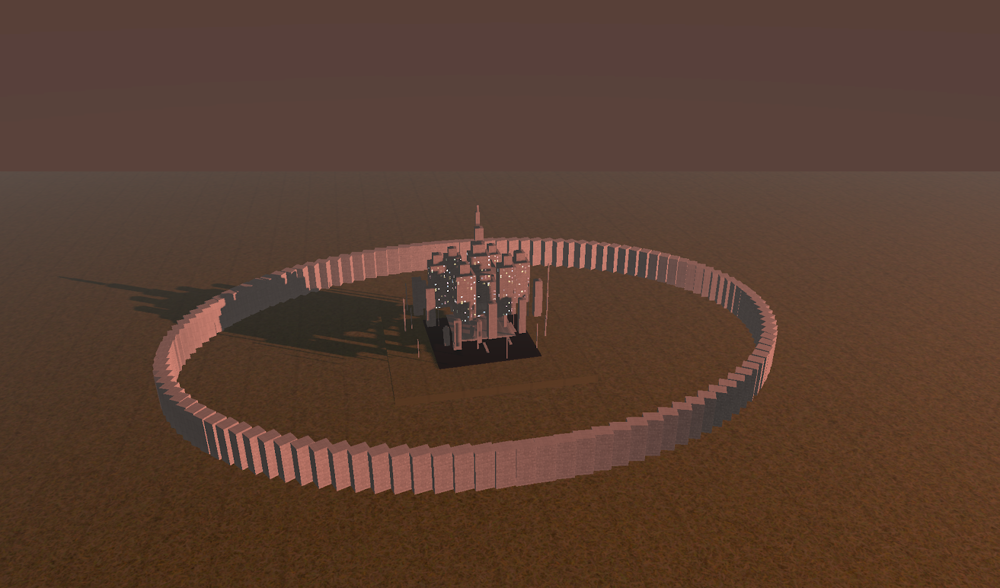
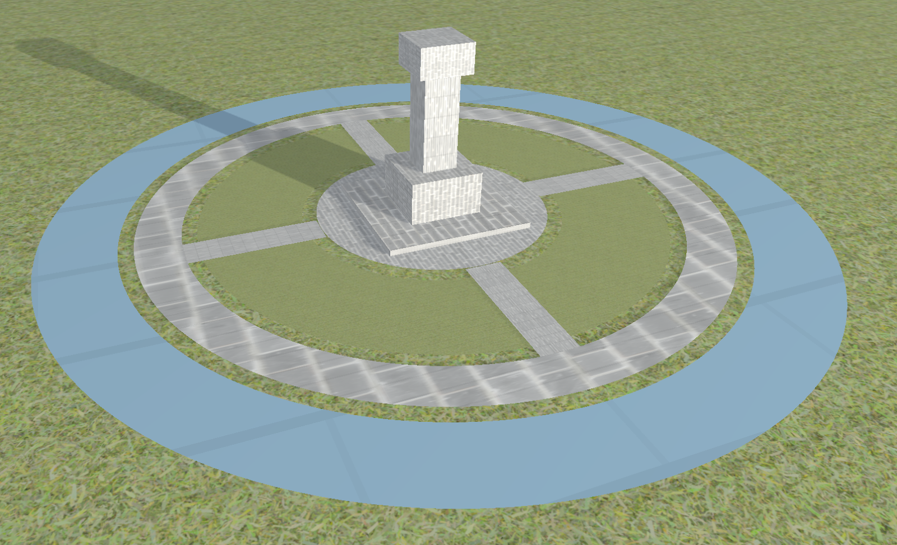

Luthadel / Elendel Rendering Transition
A rendering-focused technical project exploring scene transformation, atmosphere, and environmental presentation through a Mistborn-inspired visual transition.

Overview
This project explores environmental storytelling through rendering and visual transformation. Inspired by Mistborn, it focuses on presenting the shift from Luthadel’s oppressive, ash-filled atmosphere toward the cleaner and more open structure associated with Elendel, using scene composition and rendering choices to communicate that change.
My Role
I developed the project as a rendering and environment-focused technical exploration, experimenting with how lighting, composition, scene scale, and structural transformation can shape mood and readability.
Core Focus
- Scene Presentation: The project explores how large-scale environments can be framed and visually communicated.
- Atmosphere: Color, haze, scale, and spacing are used to establish a distinct emotional tone.
- Environmental Transformation: The contrast between Luthadel and Elendel is treated as a visual transition rather than just two unrelated scenes.
- Rendering Decisions: The project examines how technical visual choices shape mood, clarity, and thematic identity.
Design Challenges
The main challenge was balancing clarity with atmosphere. A scene can feel dramatic but unreadable, or structured but emotionally flat. This project focused on finding a middle ground where large shapes, silhouettes, and environment layout stayed legible while still carrying strong visual identity.
Development Value
This project helped deepen my understanding of rendering-focused presentation, scene composition, and how technical visual decisions affect the player’s interpretation of an environment.
Scene Evolution & Environment Studies


These studies show the broader visual progression of the project: large-scale environmental framing, the circular wall and city silhouette composition, and the cleaner memorial-style layout used to suggest the shift toward Elendel. Together they help communicate the project’s focus on atmosphere, transformation, and environmental readability.